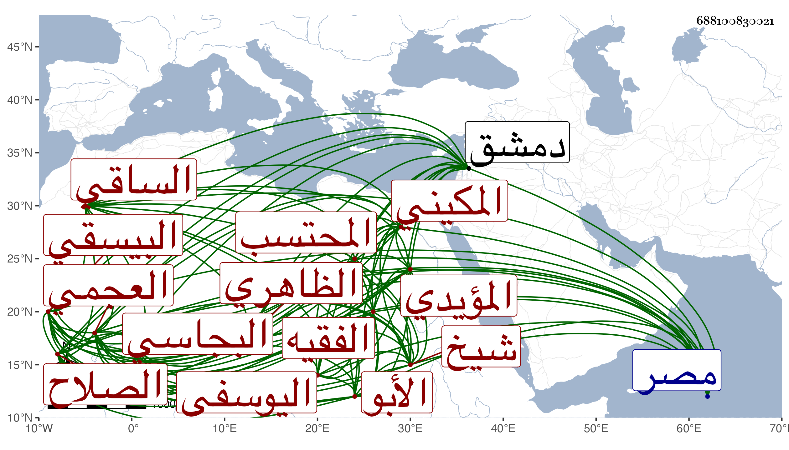

0902Sakhawi.DawLamic.ITO20230111-ara1.EIS1600.688100830021
Biography ID: 688100830021
المحتسب بالديار المصرية علي بن نصر الله العجمي وبعده علاء الدين بن الفيسي ثم الصلاح المكيني وفويت يده ببرسباي البجاسي ثم عبد العزيز بن محمد الصغير ثم قانباي اليوسفي والد محمد ثم تنم رصاص ثم سودون الفقيه المؤيدي شيخ ثم خشكلدي البيسقي مقيم الآن بدمشق ثم مغلباي طاز الأبو بكري ثم طرباي الساقي الظاهري خشقدم ثم قانصوه الخسيف ثم يشبك الجمالي فلما سافر مع الملك للحج تكلم عوضه يشبك من حيدر الوالي ولما رجع يشبك استعفى فتكلم فيها الزين قاسم شغيتة بدون ولاية ثم استقر البدري بن مزهر إلى أن استعفى فاستقر كشباي الأشرفي وهو الآن سنة تسع وتسعين متوليها .
